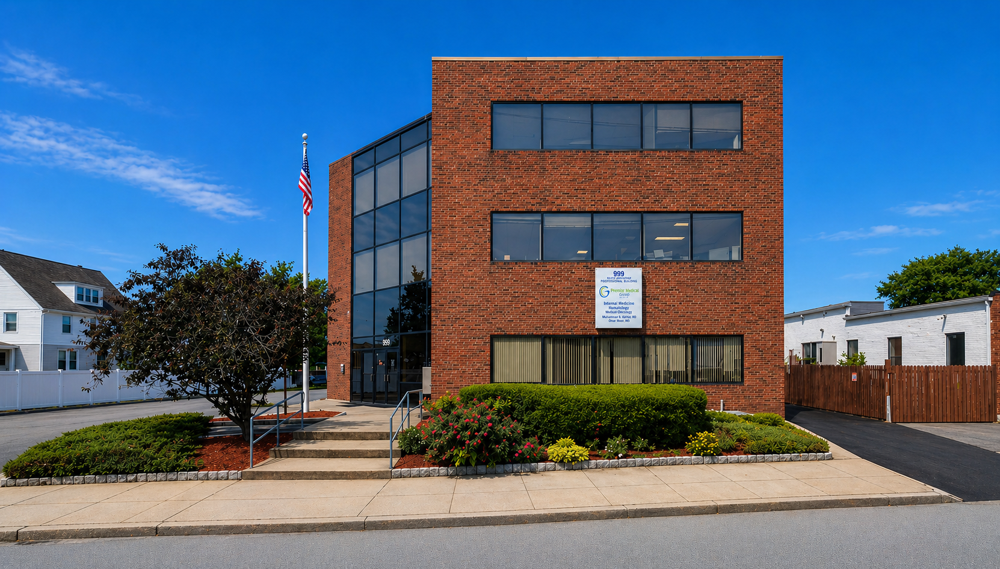

Address
999 S Broadway Suite 200
East Providence, RI 02914
Practice Focus
Internal Medicine
Adult primary care, preventive visits, and chronic condition management.
Private Practice In East Providence, Rhode Island
Internal medicine care with a professional, patient-focused approach.
Premier Medical Group is a primary care, internal medicine, hematology, and oncology practice located in East Providence, providing adult patients with clear, organized, and dependable care focused on continuity, communication, and long-term health.
Address
999 S Broadway Suite 200
East Providence, RI 02914
Practice Focus
Internal Medicine
Adult primary care, preventive visits, and chronic condition management.
About The Practice
Premier Medical Group is designed to serve adult patients who want reliable internal medicine care in a professional setting. From routine visits to ongoing follow-up, the practice emphasizes clear communication, attentive care, and a steady relationship with experienced physicians.

Staff
Lead Physician
Hematology, Medical Oncology, Internal Medicine
Dr. Muhammad Akhtar, MD is a Hematologist and Medical Oncologist in East Providence, Rhode Island with 40 years of experience. He specializes in Hematology, medical oncology, and internal medicine, bringing decades of expertise to the practice.
He graduated from University of the Punjab / King Edward Medical College and is affiliated with Our Lady of Fatima Hospital and Roger Williams Medical Center.
Physician
Internal Medicine
Dr. Omar Meer, MD is an Internist in East Providence, Rhode Island with 32 years of experience. He specializes in Internal Medicine and supports adult patients with a strong focus on continuity of care.
He graduated from Aga Khan University Medical College in Karachi, Pakistan, completed residency at Rhode Island Hospital, and is affiliated with The Miriam Hospital.
Office Team
Office Manager
Supports office operations, scheduling flow, and patient coordination throughout the practice.
Medical Assistant
Assists with day-to-day clinical support, patient intake, and communication in the office.
Medical Secretary
Helps patients with scheduling details, office communication, and administrative coordination.
Care Focus
Regular checkups, preventive care, and adult primary care follow-up.
Ongoing oversight for patients who need consistent care and long-term planning.
Visit coordination, physician follow-up, and communication that supports continuity.
What To Bring
Frequently Asked Questions
We accept many major insurance plans including Medicare, Blue Cross Blue Shield, UnitedHealthcare, Aetna, Cigna, BlueCHiP for Medicare, and AARP plans. Please call the office to confirm your specific coverage before your visit.
The practice is located on the second floor.
Yes. The practice has its own parking lot for patients.
Premier Medical Group is an MD-based practice, so appointments are handled within a physician-led office.
No. Patients are seen by appointment only.
Prescription refills can be requested by calling the office or by having your pharmacy send an electronic refill request directly to the physician. Lab results can be obtained by calling the office.